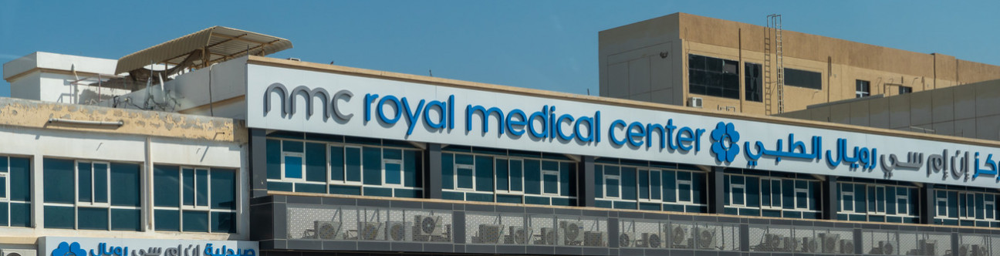

Home / Knowledge Hub / News
NMC scandal is watershed moment for UAE businesses


Nadia El Tannir speaks to Arabian Gulf Business Insight (AGBI.com) on the revelations about the scale of hidden debts spark debate in the UAE about the need for more rigorous bank loan checks and company auditing.
The ongoing legal battles surrounding the NMC Healthcare, the largest private healthcare provider in the United Arab Emirates (UAE), has been a big learning curve for how businesses manage their financial records and how banks carry out due diligence, while the eventual outcome will put in place an important set of new legal precedents, BSA associate Nadia El Tannir tells AGBI.com.
NMC, founded by Indian businessman BR Shetty in the mid-1970s, went into administration in April 2020 following months of turmoil over its finances after short-seller Muddy Waters questioned the value of the firm’s assets and cash balance, and its reported profits and debts. NMC, which used to be listed on the London Stock Exchange (LSE), disclosed more than $4 billion in hidden debt leaving many UAE and overseas lenders exposed to potential large write-offs.
Describing the scandal in laypersons terms as a case where “the company inflated its cash balances and understated it’s level of debt,” Nadia told AGBI in a phone interview, that the complex, extensive, multi-jurisdiction legal battle will have far-reaching implications for the way business is carried out in the region.
In March 2020, NMC Health told the LSE that the group’s bilateral and syndicated debt were comprised of “over 75 debt facilities from over 80 financial institutions”. According to court filings reported by Bloomberg in April, NMC owed Abu Dhabi Commercial Bank (ADCB) $963 million, Dubai Islamic Bank $541 million, Abu Dhabi Islamic Bank $325 million, Standard Chartered $250 million and Barclays $146 million.
Looking forward, El Tannir said that the fallout from the NMC debacle will prompt banks to tighten their due diligence processes.
“Today, after what happened with NMC, banks are [likely] doing more strict due diligence on any company and [asking for] more supporting documents to avoid ending up with such big debt or being unable to collect this debt,” she said.
“NMC was one of the most known success stories. I believe that the banks relied on the reputation of the business and on the documents submitted to the banks. The hidden debt appeared in late 2019 and in 2020, so the records of the company didn’t reflect this big debt [at the time of the loan facility].
“[Going forward], banks would request financial statements and business plans. They would see the plan of the business for the upcoming five to 10 years for the period during when they will be recovering the loan. I believe the amount of the loan would be determined in light of review of these documents.”
While it enjoyed rapid expansion, El Tannir said the NMC case showed that there were no shortcuts to growing a business and the ongoing legal battles should be a warning sign that there are certain steps that cannot be overlooked when it comes to raising funds.
“Businesses need to keep their records and have mechanisms to track records. They need to watch closely their exposure to debt, their cash flow and their balances. Every company needs some loans or financing to grow the businesses, but they should always refrain from cutting bridges. There are certain lines that they cannot cross.
“They need to issue financial statements on a regular basis. They need to work on accountability. The management needs to be accountable for their management decisions and they need to be held liable for any mismanagement. All these measures need to be taken by the big businesses to avoid such collapse or problems as NMC.”
Billionaire blames auditor
Founder BR Shetty, whose wealth was estimated by Forbes to be around $4 billion in 2019, and was once famous for his ‘100, Burj Khalifa, Dubai’ address and lavish Bollywood star-studded parties, continues to deny any wrongdoing and maintains that he has been the victim of fraud.
The Indian entrepreneur has sued former top executives of his companies, banks and auditor EY, claiming that they were responsible for the alleged complex multi-billion-dollar fraud and seeking $8 billion in damages.
Shetty has accused his executives of inflating the companies’ balance sheets, arranging “illegal” credit facilities and misappropriating funds since 2012, and claimed that they signed cheques in his name without his knowledge.
He further claims that EY issued fraudulent audits and financial reports while being aware of the laundering of illegally obtained loan proceeds.
Alvarez & Marsal, the administrator of UAE healthcare operator NMC Health, filed a $2.5 billion lawsuit against the UK arm of EY last month for “audit negligence” between 2012 and 2018.
In a statement to Reuters, EY said: “We believe this case is without merit and we intend to defend it vigorously.”
El Tannir said that while certain allegations have been made against EY she believed that “the liability of EY, to my knowledge, isn’t determined yet” and that there was a bigger picture at play.
“Regardless of what happened between EY and NMC, I believe that the internal audit is very important for big businesses. So, what happened with NMC shouldn’t have any impact on the appointment of auditors, whether from the Big 4 or any other competent auditor. Every company needs to implement transparency policies.”
El Tannir pointed out that the UAE’s current bankruptcy laws “are not tested yet” and the eventual fate of NMC will “allow other big companies to see whether bankruptcy and restructuring would be a successful solution for them in similar situation”.
“The [ultimate] outcomes of these cases will be very beneficial to big businesses as they will be able to assess the implementation of such regulations on companies in financial distress,” she added.
She also observed that some companies seem to be of the impression that bankruptcy or restructuring will solve all their financial problems, and managers and directors will be able to avoid any liability, but she warned this is in fact not the case.
“As, under a restructuring or bankruptcy proceedings before the courts, the managers or directors can still be held liable in certain situations pursuant to the provisions of the applicable law,” she said.
Looking to the future, El Tannir said she believes the introduction of corporate tax in the UAE will force companies to keep their books in order.
“I think that the declaration of taxes and the submissions, which would be likely required from companies to the Ministry of Finance, will ensure certain transparency and certain control over the financials of companies,” she said.
At the beginning of this year, the UAE Ministry of Finance announced the introduction of a federal Corporate Tax on business profits, effective from the financial year beginning June 1, 2023.
Reuters reported in March that the core operations of NMC had exited administration to form a new company. The UK-registered NMC Healthcare PLC and UAE-registered NMC Healthcare Ltd still remain in administration, report said, citing information from NMC.
The full article, as published, can be read here: AGBI.com - NMC scandal is watershed moment for UAE businesses.
Related Insights
GCC Restructuring & Insolvency Report
The worldwide economic distress caused by the ongoing Covid-19 pandemic...
Insolvency & Restructuring in the UAE: Practical Considerations for Corporates
Insolvency & Restructuring in the UAE in association with The...
Abidance by ESG principles key for companies' survival
Senior associate, Tyne Hugo, recently spoke with ESG Mena on...
The Legal and Regulatory Changes Impacting Oman
2022 saw a full host of legal and regulatory updates...
Dubai real estate investment funds
Real estate investment funds (“REIF”) are currently a topic on...
BSA Case Files Series: Bankruptcy Mock Trial
On Monday 21st November we hosted our Mock Trial event...
UAE Corporate Tax: What you need to know
As per our Article published regarding Corporate Tax in the...
The New Companies Law in the Kingdom of Saudi Arabia: What to Expect.
On June 28, 2022, the Saudi Council of Ministers in...
The KSA Regional Headquarters (RHQ) Program
The Saudi Arabian Vision 2030 is predicated on the development...